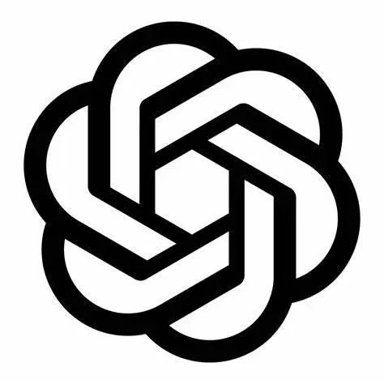

Hello 👋 I'm Fajri Farid
GPT Prompter
Informatika 2023
Coder Member
Overview
Hello Saya Fajri Farid, Web Developer. Saat Sedang Belajar Html dan Css di Coder.
Skill
HTML CSS JS

GPT Prompter
Noob Master
Experience
Man City Manager

CJ Career Mode
RE-4 Easy Mode